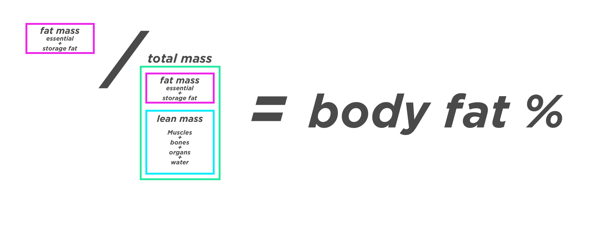

What do we want? Abs. When do we want them? Now. This calculator will give you the plan of how to get there. If you follow it, you will get abs.
There are X days until the first day of summer
June 20, 2020 üèù
When is the best time to start on your summer bod? Last summer.
Next best time? Right now. Let's do this. ⚡️
What's your name?
Hey there, thanks for being here. On to the calculator.
How to get abs
To have visible abs, you need two things. You need:
Abdominal muscles
A low enough level of body fat so your abdominal muscles are not completely covered by your abdominal fat.
That is it. Abs connect your ribs to your hips and pelvis along your front and sides. When you contract your abs, they pull your ribs and hips closer, bending your spine to the front or sides. If you can sit up or lean forward, you have abs. Check the first item off the list. ✅
What level of body fat is needed to see abs?
For guys, abs begin showing under 14% body fat, and for gals, abs begin showing under 22% body fat.
Guy: At 10% body fat you will have awesome abs.
Gals: At 20% body fat you will have awesome abs.
What is your gender?
So for you, there, as a male, you need:
✅ Abdominal muscles
?% body fat.
How to calculate and measure body fat percentage
We use body fat percentage instead of just weight because every body is different. Your weight doesn't matter for abs, just the ratio of fat mass compared to lean mass.
To calculate:
( fat mass / total body mass ) = body fat %

Remember the only thing that matters is the ratio of fat to muscle.
⭐️It doesn't matter how much you weigh.⭐️
For abs, the only things that matters is what your ratio of fat mass to lean mass is.
What is your current mass in pounds? ⚡️
(The average ? weight/mass in the US üá∫üá∏ is ?. At A, you are ? the average.)
Do you know your current body fat percentage?
How to visually estimate body fat percentage with pictures üì∏
If you don't know your current body fat percentage, you can estimate it pretty accurately by looking at comparison photos and reading the description of different levels.
I scoured the internet for the best body fat comparison charts.
Fair warning lots of pictures of people with various levels of body fat ahead. You don't have to be exactly accurate. Be honest. Guys usually think they are leaner than they really are, girls the opposite.
At A pounds, with a body fat percentage of Y%, you have B of body fat and pounds of lean body mass for a total of A pounds of total mass.
What is your goal body fat %?
Remember, for males your abs pop at 10% body fat, but you can set any goal you desire here.
How to get to goal % body fat
You are at Y%, with a current weight of X with Z pounds of lean body mass and A pounds of body fat.
Your goal is goal% bf, with a goal weight of with Z pounds of lean body mass and C pounds of fat.
We want to keep all your lean body mass. We assume you keep all Z pounds of lean mass, and just decrease your fat until you are at gender% body fat. More on how to keep your muscle mass later.
To get to goal% bf, you need to burn off B pounds of fat. (Current A - Goal C = B to lose)
Let's update your checklist! What you need for abs.
✅ Abdominal muscles
Go from Y% body fat to ?% body fat, by using up B pounds of fat.
The next question is "How can I decrease my body fat percentage?" quickly followed by "How long will this take?" We can answer both these questions with the formula to reduce body fat.
How to decrease body fat percentage
To decrease your body fat percentage you need to keep or increase your lean body mass (muscles good) and reduce the amount of stored fat you have.
To decrease the amount of stored body fat you need to consistently be in an energy deficit.
To increase or maintain your lean body mass you need to eat enough protein, lift weights, and sleep enough.
Put those all together and there are 4 things to decrease your body fat percentage:
Be in an energy deficit.
Lift weights to keep and gain muscle.
Eat enough protein to repair and build your muscles.
Sleep enough to repair and build your muscles and keep you stress hormones down..
Let's tackle the first one.
How to be in an energy deficit
This one is a simple concept, but difficult to do. You need to balance how much energy your body uses, with home much energy you consume.
Energy Expenditure > Energy Intake
Let's first calculate how much energy you use on average.
How to calculate your energy expenditure
Your body uses or burns energy all the time to keep you alive and happy. If you did absolutely nothing in a day, your body would still burn a lot of energy keeping you healthy, pumping your blood and repairing your cells.
This is called your base metabolic rate, or BMR.
Let's Calculate your BMR
We can use a formula to calculate what your BMR is.
What is your age?
What is your height in feet?
and your remaining height in inches
We will use the weight that you entered earlier, of weight fill pounds.
Your estimated BMR is bmrAnswer
If you did nothing in a day, you body would burn bmrAnswer calories keeping you alive.
However, we don't just sit in bed all day. (Although sometimes we wish we could).
We move and cook, and talk, and fidget. All the non-exersize energy you use in a day above what you need to just keep yourself alive (BMR) is categorized as Non-Exercise Activity Thermogenesis or NEAT.
Intentional exersize like walking, lifting weights or playing soccer is categorized as Exercise Activity Thermogenesis or EAT. (Which is weird because it is like the opposite of eating, but whatever scientists you do your names how you want)
There is also some energy used in breaking down your food. This is known as Thermic Effect of Food or TEF. It has a small enough effect (no you can't pound just celery and lose weight) we are going to ignore it for right now.
BMR is easy to calculate as it largely depends on the size of your body, but NEAT and EAT and TEF are harder to calculate as they are unique to each person and to each day. So scientists have developed a activity multiplers. You estimate your activity multiplier based on standards (see below) then you that to your calculated BMR, and it estimates your BMR, NEAT, EAT, and TEF up in one pretty bow üéÄ. This is called you Total Daily Energy Expenditure or TDEE. That number is the energy you burn in a day.
Let's pick your Activity Multiplier
Need help picking your activity level? üëáüèª
Click to show the Estimating Activity Level Section
How to estimate your Activity Level
Studies have shown that we all overestimate how much we are active. So read the descriptions, pick where you think you are, then move down one level. For example if you think you are Moderately Active, chose Lightly Active. Since it is an estimate it just needs to be close and then you can see what the results are and tweak it.
Sedentary 1.15
You don’t intentionally exercise at all. Get up, go to work, come home, eat dinner, relax.
Lightly Active 1.2
On average, you walk for exercise about 30 minutes a day. Or you are running or lifting weights fro 15 minutes a day.
Moderately Active 1.4
If I was looking for you on a weeknight, I would call the gym. 50 minutes of vigorous exercise a day. Or about one hour and 45 minutes of walking (for exercise, not going around your house) per day. Most people do not do this.
Very Active 1.6
You move vigorously for your work (think something like construction or yardwork), or you workout every single day for more than an hour. If you were to get this level of activity only walking, it would be a nearly impossible four hours and 15 minutes of walking (again, for intentional exercise) a day.
Extra Active 1.8
Hey there Michael Phelps. Almost no one does this. This means every single day you are working out hard for an hour and a half. Or you are a professional speed walker.
Your BMR x Your Activity Multiplier gives your Total Daily Energy Expenditure or TDEE.
bmrAnswer x Activity Multiple =
We estimated your energy expenditure, so we can fill in half of the equation.
Energy Expenditure < Energy Intake
< ?
Now let's figure out your energy intake.
How to estimate your energy intake
We measure the amount of energy we intake and use in calories. A calorie is the amount of energy it takes to heat a kilgram of water 1 degree.
Most people don't like this, but the best way to know your energy intake is to track how many calories you are eating. That is the only way to know for sure how much energy your are taking into your body.
This does not mean that you are going to have to track everything you eat for the rest of your life like some food accountant. But it does mean that you need to track it for a while. Recording everything (and I mean everything) you eat or drink is the single best way to accurately gauge your energy intake.
You can use an app like MyFitnessPal or record it in a paper notebook, but you have to track everything you eat. This is what allows you to have confidence that the process is working. The scale can go up and down but you know you are losing body fat because you are tracking exactly what you are eating and you are eating the appropriate amount of energy for your current goal.
Let's say for example you calculated your TDEE to be . This means that if you consume deficit result example calories, you would be in a deficit of deficit
How being in a caloric defict burns body fat
If you are consistently intaking less energy than you expend, your body will send signals to your fat cells that is needs energy. Your body breaks down the fat stored there. Do this consistently and your body will use up the pounds of fat you want to get rid of.
Where does the fat go when it is burned?
Carbon, Oxygen, and Hydrogen make up a large part of our bodies.
Chemical formula for water is H2O. Chemical formula for carbon dioxide is CO2. The average chemical formula for human fat is C55H104O6.
Fat + Oxygen = Carbon Dioxide + Water
10 pounds of fat becomes -> 8.4 pounds of CO2 gas, and 1.6 pounds of water.
How many calories are in 1 pound of fat?
Pure fat has 9 calories per gram. Think Crisco. If you burn 1 gram of pure fat, it will put off 9 calories of energy, along with .84 grams of CO2 and .16 grams of H2O.
There are 453.59 grams per pound. So 452.5 * 9 = 4,072.5. The max number of calories a pound of fat can contain is 4073 calories. If you had a pound of Crisco, it would have 4,072 calories in it.
However, as we learned above, body fat is not pure fat. You have lots of other stuff in there like cell walls, protein, fluid, cell nucli and other tissues. So the calorie content of body fat is going to be less than that of pure fat.
Body fat tissue is around 87% fat.
Using those values, we can conclude that a pound of body fat contains anywhere from 3,436 to 3,752 calories.
In 1958, a scientist named Max Wishnofsky studied this quite a lot and concluded that the caloric equivalent of one pound of body fat was 3,500 calories.
We now have all the information we need to figure out how long it will take you to get to bf goal% body fat!
How long will it take to get to bf goal% body fat
We know how many pounds of fat you currently have. A pounds.
We know how many pounds of fat you will have at bf goal% body fat. C pounds
We know how many pounds of fat you have to burn off as energy and CO2 and H2O. B
We know how many calories are in a pound of fat. 3,500
This means we know know how many calories you need to burn off. 3,500 * B = calories calories to use up.
With that information we can now figure out 3 additional inter-related things. You can pick a date you want to be at bf goal % body fat. That will tell you how many calories you should eat per day, which we can use to calculate your daily caloric deficit. Or you can pick how many calories you want to eat in a day, and we can use that to calculate your caloric defict and the date at which you will arrive at your goal.
Since these 3 are linked, we can pick the amount of energy you want to eat and it will calculate the deficit and the date you will reach your goal by. Or you can pick a date you want to achieve this goal by and it will calculate the deficit needed, or you can pick the deficit and it will tell you the daily energy intake and the ateyou will achieve that goal by.
A very important question, do you know how much energy you are eating each day?
Daily Calories you eat / want to eat:
Your TDEE of X minus your deficit of Y gives you Z calories a day.
Daily caloric deficit:
Your caloric deficit is not calculated%. General advice is to pick a 25% deficit.
Date you will hit your goal by:
It will take you X days to reach your goal.
It will take you X weeks to reach your goal.
It will take you X months to reach your goal.
It will be daysinsert in X days.
Max Fat Loss
There is a upper limit to how fast you can lost body fat. Your body doesn't take all the fat from one cell or one pound of fat, it takes a little bit of energy from everywhere. Studies show that the max amount of energy you can use is 31 calories from each pound of fat.
This means that you can multiple your pounds of fat x 31, to get the max caloric deficit your body can sustain and not start using lean mass as energy as well.
For you this max caloric deficit is X calories per day.
Warning, this is your MAX. This is not normal. This is probably not healthy. But it is the most aggressive caloric deficit you can sustain while not having your body metabolize your own muscles for energy. Remember also that as you fat mass decreases, this max caloric deficit decreases, which is one of the reasons why losing fat when you have less fat mass can be tricky.
This also leaves you little room to get enough protein.
At X pounds total body weight, you need grams of protein a day. Since protein has 4 calories per gram, that is calsfromProtein calories from just protein.
With your TDEE of tdee - max caloric deficit of X that leaves you daily at Max calories a day. If calsfromProtein of those come from protein that means you have just Y calories left to consume in a day.
Remember max isn't always better.
But remember, there are 4 parts to reducing your body fat!
Be in an energy deficit.
Lift weights.
Eat enough protein to repair and build your muscles.
Sleep enough to repair and build your muscles and keep you stress hormones down..
Simply put, to lose just fat and not fat and muscle you need to workout, lifting weights, to remind your body you need the muscles. You need to eat enough protein to give the body fuel for building and maintaining muscles. And you need to sleep to allow your body to recover and keep your muscles.
If you only work on the energy deficit, you will lose muscle mass as well as body fat. This is not good as you will lose the very abs you are trying to get to show.
How to lift weights
Here are links to 2 basic weight lifting programs.
How to eat enough protein
Research shows that you need .82 grams of protein per pound of total body mass.
At X pounds total body weight, you need grams of protein a day.
How to get enough sleep
Sleep is critical to losing weight and gaining muscle, and having an enjoyable and productive life. If you are not getting enough sleep, you need to get more of it.